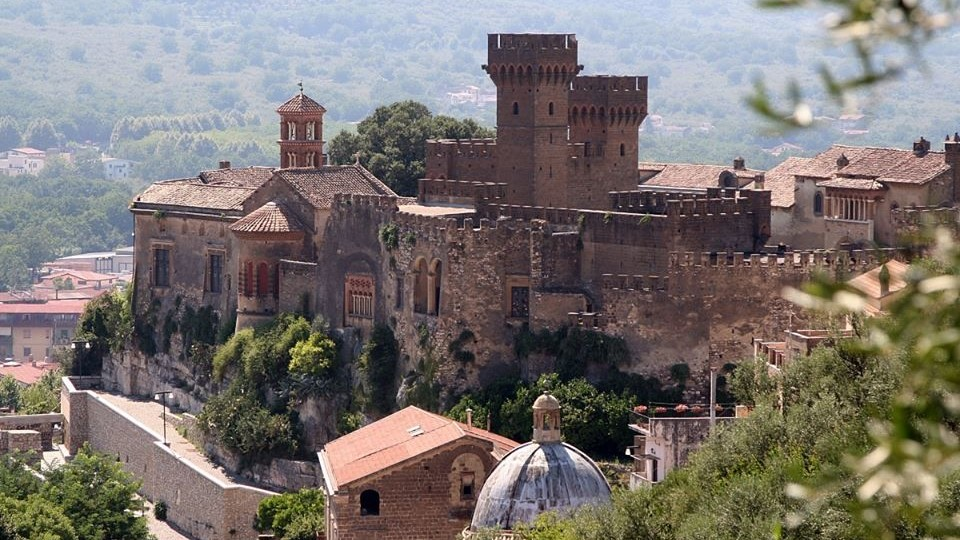
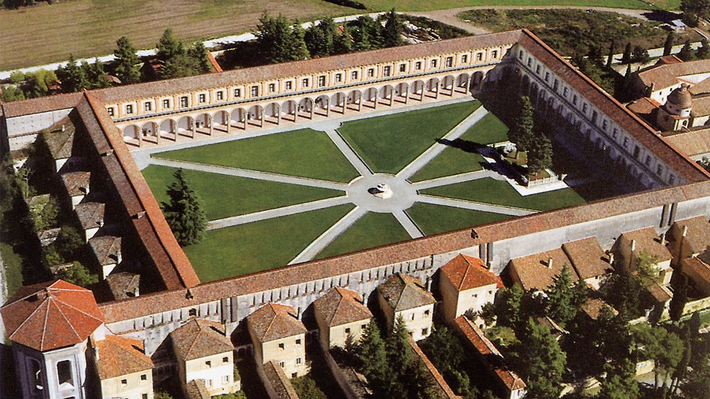
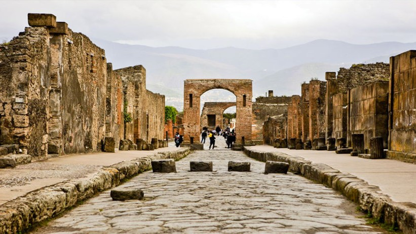
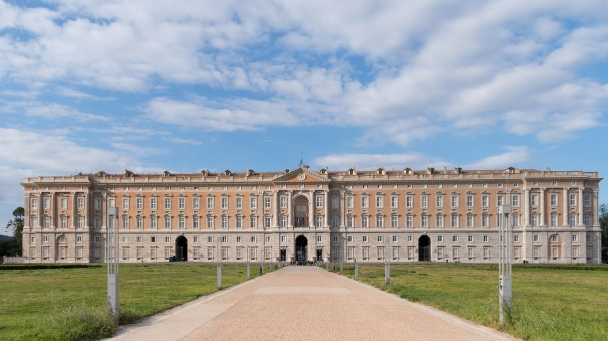

Phlegraean Fields
Description
The Phlegraean Fields is a large volcano situated to the west of Naples, Italy. It was declared a regional park in 2003. The area of the caldera consists of 24 craters and volcanic edifices; most of them lie under water. Hydrothermal activity can be observed
at Lucrino, Agnano and the town of Pozzuoli. There are also effusive gaseous manifestations in the Solfatara crater, the mythological home of the Roman god of fire, Vulcan.

Benevento
Description
Benevento is a city and comune of Campania, Italy, capital of the province of Benevento. It occupies the site of the ancient Beneventum, originally Maleventum or even earlier Maloenton. The meaning of the name of the town is evidenced by its former Latin
name, translating as good or fair wind. In the imperial period, it was supposed to have been founded by Diomedes after the Trojan War.

Egg Castle
Description
Egg Castle is a seaside castle in Naples, located on the former island of Megaride, now a peninsula, on the Gulf of Naples in Italy. The castle's name comes from a legend about the Roman poet Virgil, who had a reputation in the Middle Ages as a great
sorcerer and predictor of the future. In the legend, Virgil put a magical egg into the foundations to support the fortifications. Had this egg been broken, the castle would have been destroyed and a series of disastrous events
for Naples would have followed. The castle is located between the districts of San Ferdinando and Chiaia, facing Mergellina across the sea.

Limatola's Castle
Description
The Limatola Castle is located in the upper part of the historic center, on a hill, in a strategic position. It was built by the Normans on the remains of a Longobard tower. In the Renaissance, major renovations transformed it from military architecture
to a stately home, while retaining some defensive characteristics. After decades of neglect, the building was restored in 2010 and houses a hotel restaurant. The castle is surrounded by a wall interspersed with circular towers
with escarpments up to the height of the cornice.
Read more
Italian Website

Lancellotti Castle
Description
Lancellotti Castle is the building that symbolized Lauro, not only for its artistic value but also for its history. Subsequently occupied by the Del Balzo di Avellino, the Orsini, the counts of Nola, the Pignatelli and finally the Marquis Lancellotti.
In 1632 it was bought by the Lancellotti family, who still own the castle today.
Read more
Italian Website

Padula Charterhouse
Description
Padula Charterhouse, is a large Carthusian monastery, or charterhouse, located in the town of Padula, in the Cilento National Park, in Southern Italy. It is a World Heritage site. The monastery is the largest in Italy. Its building history covers 450
years, but the principal parts of the buildings are in Baroque style. It is a very large monastery, comprising 51,500 m² (12.7 acres), with 320 rooms and halls.

Archeological Site of Herculaneum
Description
The Archeological site of Herculaneum is the area south of the town centre of modern Ercolano where the Roman town of Herculaneum has been excavated. Herculaneum was destroyed and buried by lava and mud during the eruption of Mt. Vesuvius in AD 79 together
with Pompeii, Stabiae and Oplontis. In 1997 the Herculaneum site was listed as a World Heritage Site by UNESCO.

Pompeii Ruins
Description
Pompeii was an ancient city located in what is now the comune of Pompei near Naples in the Campania region of Italy. Pompeii was buried under 4 to 6 m (13 to 20 ft) of volcanic ash and pumice in the eruption of Mount Vesuvius in AD 79. Largely preserved
under the ash, the excavated city offered a unique snapshot of Roman life, frozen at the moment it was buried, and an extraordinarily detailed insight into the everyday life of its inhabitants, although much of the evidence
was lost in the early excavations.

New Castle
Description
New Castle, often called Maschio Angioino (Italian: "Angevin Keep"), is a medieval castle located in front of Piazza Municipio and the city hall in central Naples, Campania, Italy. Its scenic location and imposing size makes the castle, first erected
in 1279, one of the main architectural landmarks of the city. It was a royal seat for kings of Naples, Aragon and Spain until 1815.

Underneath Naples
Description
Underneath Naples lies a series of caves and structures created by centuries of mining, and the city rests atop a major geothermal zone. There are also a number of ancient Greco-Roman reservoirs dug out from the soft tufo stone on which, and from which,
much of the city is built. Approximately one kilometre (0.62 miles) of the many kilometres of tunnels under the city can be visited from the Napoli Sotteranea, situated in the historic centre of the city in Via dei Tribunali.
This system of tunnels and cisterns underlies most of the city and lies approximately 30 metres (98 ft) below ground level. During World War II, these tunnels were used as air-raid shelters, and there are inscriptions in the
walls depicting the suffering endured by the refugees of that era.

Paestum
Description
Paestum was a major ancient Greek city on the coast of the Tyrrhenian Sea in Magna Graecia (southern Italy). The ruins of Paestum are famous for their three ancient Greek temples in the Doric order, dating from about 550 to 450 BC, which are in a very
good state of preservation. The city walls and amphitheatre are largely intact, and the bottom of the walls of many other structures remain, as well as paved roads. The site is open to the public, and there is a modern national
museum within it, which also contains the finds from the associated Greek site of Foce del Sele.

Royal Palace of Caserta
Description
The Royal Palace of Caserta is a former royal residence in Caserta, southern Italy, constructed by the House of Bourbon-Two Sicilies as their main residence as kings of Naples. It is the largest palace erected in Europe during the 18th century. In 1997,
the palace was designated a UNESCO World Heritage Site; its nomination described it as "the swan song of the spectacular art of the Baroque, from which it adopted all the features needed to create the illusions of multidirectional
space". In terms of volume, the Royal Palace of Caserta is the largest royal residence in the world.

Palace of Capodimonte
Description
The Royal Palace of Capodimonte is a grand Bourbon palazzo in Naples, Italy, formerly the summer residence and hunting lodge of the kings of the Two Sicilies, and was one of the two Royal Palaces in Napoli. It today houses the National Museum of Capodimonte
and art gallery of the city. "Capodimonte" means "top of the hill", and the palace was originally just outside the city, which has now expanded to surround it, and somewhat cooler than the city in summer.


Royal Theatre of Saint Charles
Description
The Royal Theatre of Saint Charles, as originally named by the Bourbon monarchy but today known simply as the Teatro di San Carlo, is an opera house in Naples, Italy, connected to the Royal Palace and adjacent to the Piazza del Plebiscito. It is the oldest
continuously active venue for opera in the world, having opened in 1737, decades before either Milan's La Scala or Venice's La Fenice.